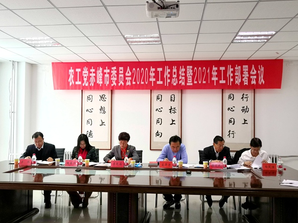

2020年12月27日，农工党赤峰市委会召开2020年工作总结暨2021年工作部署会议。按照疫情防控要求，减少人员聚集，本次会议通过融媒体平台网络“云直播”模式进行。农工党赤峰市第六届委员会领导班子成员及新党员代表在主会场参加会议。
会议传达学习了《中国农工民主党关于认真学习贯彻中共十九届五中全会精神的决议》，总结了农工党赤峰市委会2020年工作，安排部署了2021年任务，还表彰了2020年在疫情防控、组织工作、参政议政、思想宣传、社会服务等方面表现突出的先进个人。新党员与大家见面并由新党员代表进行表态发言，农工党赤峰市委会老领导为新党员赠送了章程、党史图书。
农工党赤峰市委会主委李艳茹在总结讲话中对广大党员提出三点希望：一是要深刻领会中共十九届五中全会精神，贯彻落实农工党中央十六届四次全会精神，结合本职工作、站在赤峰发展大局上深入学习思考；二是要务必筑牢信仰之基，毫不动摇地坚持中国共产党的领导，坚定不移地听党话、跟党走；三是要有饱满的精神状态和昂扬的奋斗姿态，凝心聚力、锐意进取，为经济社会发展积极建言献策，更好服务全市中心工作大局。
会议要求，2021年，农工党赤峰市委会要坚持以习近平新时代中国特色社会主义思想为指导，认真贯彻落实中共十九大、十九届二中、三中、四中、五中全会精神以及农工党十六大、十六届二中、三中、四中全会精神，在农工党内蒙古区委会和中共赤峰市委的领导下，充分发挥界别优势，齐心协力、开拓进取，统筹抓好履行参政党职能和推进自身建设，积极助力全市做好“六稳”工作、落实“六保”任务，为巩固脱贫攻坚成果、全面推动乡村振兴和全面建成小康社会贡献力量。
农工党赤峰市委会所属各基层组织分别组织党员、入党积极分子通过网络参加会议。线上线下100余人参加会议。